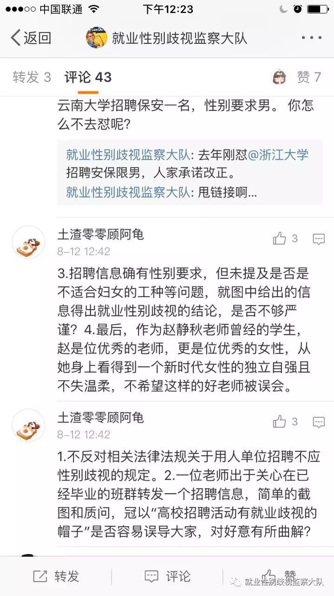

极端女权是一个伪命题，推翻性别就业歧视的大山才是正道
8月10日，新浪微博用户 @那年四月一日 发布了一条微博，引起了很大争议。微博截图表示，云南大学新闻学院13级新闻专业班主任赵静秋老师在群里转发了一则有性别歧视的信息。微博发出后，网友纷纷对该老师的做法表示谴责。这条微博被评论转发很多次。
但是，云南大学得知此事，私下以考研政审作为威胁，要求@那年四月一日删除微博。云南大学并没有第一时间讨论如何应对老师发了涉嫌性别歧视的信息，而是息事宁人的思路，用强权让 @那年四月一日 删微博，这是滥用强权干涉个人的言论自由。
与此同时，云南大学的一些学生也开始参与到论战中，他们主要有观点：
1.赵静秋老师是位优秀的老师，更是一位优秀的女性，从她身上看得到一个新时代女性的独立自强不失温柔，不希望这样的好老师被误会。

这个学生的评论里充满了性别刻板印象，不失温柔看起来像是赞赏，实际上也是男权社会对女性的规训和束缚。赵静秋老师是否优秀，我不了解，也不做评论。然而， 即便她是一个优秀的老师，也不能改变她在班级群里发布涉嫌性别歧视的信息的事实。虽然她不是直接发布涉嫌性别歧视广告的主体，但是她作为一名老师传播了性别歧视的信息。2016年，《教育部办公厅关于进一步做好高校毕业生就业创业工作的通知》中明确指出，高校要进一步加强校园招聘活动监管，校园招聘活动严禁发布含限定院校、性别、户籍、民族等歧视性条款的就业信息，坚决反对任何形式的就业歧视。云南大学和赵老师如果不能遵守政策法规，那么即使多好的学校、多好的老师，也难辞其咎。
2.@那年四月一日 的行为太过激了。她被认为的过激行为可能一是说了脏话，二是发了截图到微博上。
从截图中我们可以看出 @那年四月一日 说了脏话，使用了“屌”这个不雅用语。但是她的脏话却话糙理不糙。这个招聘信息确实反映了“有屌万事足”。昆工城市学院招聘一个有责任心、能做班主任的实验室管理员，没有写明任何条件说明只有男性才能胜任。昆明城市学院没有说明招聘职位的具体要求，就粗暴地只招男性，剥夺了女性平等就业的机会。
批评者认为，她把截图发到微博上是一种过激行为。但是，“过激”这个词往往被滥用于对维权者的打压。老师作为公职人员应该接受人民群众的监督。另外，云南大学应该反思自己学校为何至今还没有设立有关招聘性别歧视的举报、投诉渠道——这是导致学生投诉无门、只能到微博上寻求舆论监督的根本原因。
3.有人于8月16日写了一篇名为《极端女权解决不了就业性别歧视》的文章，给一些骂屌的网友贴上了“极端女权主义”的标签，说她们企图用网络暴力的方式，打破企业用人单位对女性的桎梏，通过踩男性提高女性地位。

文章的作者看起来并非真的关心女权主义行动或者就业性别歧视。首先，很明显，他们在网上随便地找了几个数据、罗列了几个女权行动派做过的行动、摘抄其它新闻报道对黄溢智律师的采访，煞有介事地把它们拼在一起，甚至都没有核对行动发生的时间，就成为了一篇看似关心实质脑子不清晰的浆糊文章。
其次，文章批评一些网友骂屌的做法为“极端女权主义”。这是典型的扣帽子行为，也是男权社会对女权主义者的惯用泼脏水手段。文中的截图就是有几个人骂“屌”，这根本算不上极端。如果这算是一种极端行为，那么从词频数量角度看，微博、微信群、朋友圈中那些日复一日出现“你妈逼”的词语更应该被作者义愤填膺地批判。当然，我并不是这样的说法有多大的正当性，而是男权社会太喜欢对女性的行为提出更高的标准，导致女性连反抗都要成为一个温文尔雅文质彬彬的反抗主体。
中国根本不存在什么“极端女权”，没有几个女人真正有权力，更没有几个女权主义者有力量能对别人造成切实的伤害。反而是那些作者喜欢的温和弱质纤纤的女性在谦让中不停地让渡权利、损失利益。“极端女权主义”的说法根本就是对女权主义的污名，其目的在于维护利益既得者的既得利益，并且堵死反抗者的抗争之路。
文章最后还喊了口号，说“我们要伸张女性权利，伸张所有人类的平等权利，也需要警惕任何主义的极端倾向”。我诚恳地回应，如果作者真的关心平等，反对极权和压迫，就应该好好审视一下云南大学的以考研政审威胁学生言论自由的做法，这才是权力滥用的表现，这才是真正的不公。@那年四月一日指出赵静秋老师发布涉嫌性别歧视的信息是不对的，这就是在用行动改变现状。
作者介绍：黄蓉，浙江就业性别歧视第一案当事人，长期关注性别就业歧视，致力于用自己的行动去改变就业不平等的现状。